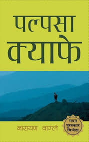

<!DOCTYPE html>
<html lang="en">
<head>
    <meta charset="UTF-8">
    <meta name="viewport" content="width=device-width, initial-scale=1.0">
 <title>Palpasa cafe</title>
    <style>
        body {
            background-color: mediumaquamarine;
            font-family: Arial, sans-serif;
        }
        .header {
            font-size: 50px;
            font-weight: bold;
            text-align: center;
            padding: 20px;
        }
        .subheader {
            font-size: 20px;
            text-align: center;
            padding: 10px;
        }
        .main-content {
            max-width: 1150px;
            margin: 0 auto;
            padding: 65px;
          font-size: 30px;
            color: white;    
    </style>
</head>
<body>
</html>
    </style>
</head>
<body>
    <div class="header">Palpasa Cafe</div>
<center>
    <div class="subheader">Narayan Wagle</div>

    <div class="main-content">
 <center>
        <!-- Your article content goes here -->
      <p>"पाल्पासा क्याफे" नारायण वाग्ले द्वारा लेखिएको एक प्रसिद्ध नेपाली उपन्यास हो। यसको कथा नेपालको सिभिल युद्धको उच्चारमा ड्रिश्य, एक कलाकार, को कथामा घुम्ने छ। यो उपन्यास ड्रिश्य र पाल्पासा, ९/११ पछि आफ्ना माता-पिता को देशमा फर्किएकी पहिलो पुस्तावा अमेरिकी नेपाली पाल्पासा, को प्रेम कथा हो। यसलाई अक्सर एक युद्ध उपन्यास मानिन्छ, र यसमा ड्रिश्यले भ्रमण गर्दछ जसले नेपालको गाउँमा युद्धको प्रभावको वर्णन गर्दछ।

मदन पुरस्कार द्वारा २००५ मा सम्मानित "पाल्पासा क्याफे" नेपालको समाज-राजनीतिक व्यस्तताहरू द्वारा १० वर्षको माओवादी विद्रोहको दौरातिर कराइएको हो। उच्चारमा मात्र 'म' रूपमा रेफर गरिएको नामहीन पात्र एक कलाकार हो र कलामा उनका निर्भीक कला क्षमतामा पर्खाल हुने अवस्थामा छ। पाल्पासासंगको केहि साधारण तथा योजनात्मक भेटघट्ट दुव्र्यचनमा विकसित हुन्छ। नयाँ अनुरोधको बर्षांशमा प्रगति गर्दछ र सारिका र भारतमा हाम्रो अन्तर्राष्ट्रिय बसैँचा भोगदानको प्रायोजनामा विरुद्धको विद्रोह भन्ने भनाइहरू छन्।

तथापि, उपन्यासले अनेक स्तरमा काम गर्दछ र प्रत्येक चरित्रबाट वाग्ले हाम्रा संस्कृति, मूल्यहरूमा परामर्श दिन्छ र सबै भन्दा महत्त्वपूर्ण कुरा गर्दछ, उपन्यासले विदेशी शिक्षा लिएर विदेशमा बस्ने युवाहरूको समर्थनको बारेमा प्रतिक्षा गर्दछ र त्यसमा ब्रेन-ड्रेनको अत्यन्त प्रमुख केस दिन्छ। तर उपन्यासमा चरित्रहरू पनि गर्व संग मातृभूमि मनमा आवाज देऊन्। उपन्यासले एक अवधिमा विरोधीहरूको असरको उपरिलाई यसको केहि चरित्रद्वारा समाधान गर्दछ। लेखकले बमविस्फोट र सन्नाहका बादमा विद्यालय र अस्पतालको कणी रिमेन्स सिर्जना गर्दछ भन्दै ज्ञातमा अपनी पन्ध्र ग्रन्थहरूमा वायुप्रदूषणको प्रभावको एक बादामै अश्रूलाइ विस्तार गर्दछ। मृत्यु र पीडा भन्दै विभिन्न परिप्रेक्ष्यमा माता-कन्याहरूको मृत्यु, एक नयाँ विवाह गरिएकी महिलाको पति को मृत्यु, र बालकबाट एक साथी गुमाउने दु:ख को त्रासो उपभोग गर्दछ। वास्तविक, सरल र भाषामा सोध्ने पढ्न सुरक्षित गर्दछ यो एक रोचक निवासको प्रस्ताव गर्दछ। यसले प्रदान गर्न इच्छातिय छ, अनि त्यसलाई संक्षेपमा अन्तर्गत र सुझाउँदै सफल भएको छ। "पाल्पासा क्याफे" बढी जडो गएको छ र यसले निश्चित रूपमा यसलाई जीन्छ।</p>
    </div>
    <!DOCTYPE html>
<html lang="en">
<head>
    <meta charset="UTF-8">
    <meta name="viewport" content="width=device-width, initial-scale=1.0">
 <center>
    <style>
        /* Style for the button */
        .my-button {
            background-color: #0074D9;
            color: #FFFFFF;
            border: none;
            padding: 10px 60px;
            font-size: 20px;
            border-radius: 5px;
            cursor: pointer;
        }

        /* Optional hover effect */
        .my-button:hover {
            background-color: #197B7F;
        }
    </style>
</body>
</html>

